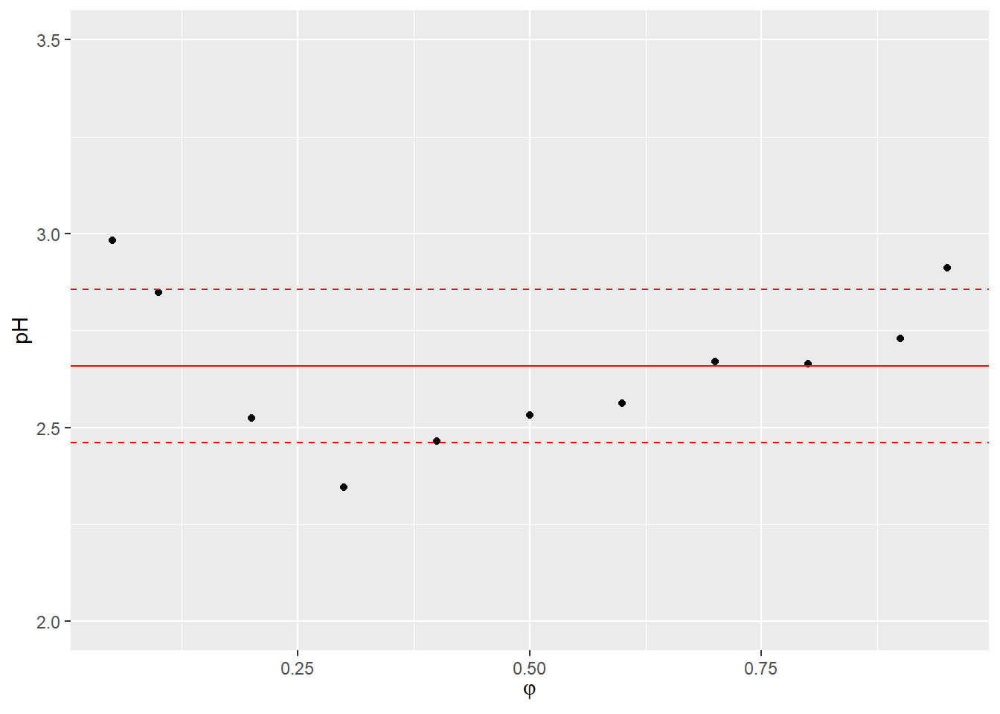

We used a publicly available dataset that comprises the measurements of RP-HPLC retention times collected for 1026 analytes. The retention times were measured under isocratic conditions on Eclipse Plus C18 (Agilent) stationary phase with 3.5 μm particles. The experiments were conducted using a mixture of two solvents: solvent A, which was made of 0.1% formic acid in water, and solvent B, which was made of 0.1% formic acid in acetonitrile. The column temperature was set at 35^{}C. The data were collected by Boswell et al. and were used to create a method to predict retention time by Back-Calculating the Gradient.
Code
# load packageslibrary(here)library(ggplot2)# load dataDS <-read.csv(here::here("1_data/database_stan_1026.csv"),header =TRUE, sep =";", dec =".")DS_names <-read.csv(here::here("1_data/database_stan_1026_analyte_names.csv"),header =TRUE, sep =",", dec =".")DS_pKa <-read.csv(here::here("1_data/ACD_pKas.csv"),header =TRUE, sep =",", dec =".")# divide the analytes into groups according to log PDS$logP_group <-with(DS, ifelse(logP_ACD <1.5, "1",ifelse(logP_ACD <3& logP_ACD >=1.5, "2", ifelse(logP_ACD <4.5& logP_ACD >=3, "3", "4" ))))lab <-function(x){ifelse(x ==1, "log P < 1.5",ifelse(x ==2, "1.5 \u2264 log P < 3", ifelse(x ==3, "3 \u2264 logP < 4.5", "4.5 \u2264 log P" )))}nObs <-length(DS$ID)nAnalytes <-length(unique(DS$ID))fi <-seq(0,1,0.1)ggplot(data=DS, aes(x=concentration, y=logk, group=ID)) +geom_line(aes(color=ID)) +facet_wrap(~logP_group, ncol=2, labeller=labeller(logP_group = lab)) +labs(x =expression(varphi), y =expression(Log~k[Obs])) +theme_gray(base_size =14) +theme(legend.position="none")
The pH value of the mobile phase was verified experimentally for the purpose of this work. It equaled 2.66 with a standard deviation of 0.19 for the range of acetonitrile contents from 5 to 95%.
Code
DS_pH <-read.csv(here::here("1_data/pH.csv"),header =TRUE, sep =";", dec =",")ggplot(data=DS_pH, aes(x=fi, y=pH)) +labs(x =expression(varphi), y ="pH") +geom_point() +geom_hline(yintercept=mean(DS_pH$pH), color ="red") +geom_hline(yintercept=mean(DS_pH$pH)-sd(DS_pH$pH), linetype="dashed", color ="red") +geom_hline(yintercept=mean(DS_pH$pH)+sd(DS_pH$pH), linetype="dashed", color ="red") +ylim(c(2.0,3.5))

The values of lipophilicity log P, molecular mass MM, and pKa were added to the dataset. They were calculated using ACD/Labs program based on the provided structures of analytes. The log P value of the analytes ranged from −5 to 8.75, and MM ranged from 73.09 to 656.8.
The pKa values was ranged from −21.40 to 19.14. For one analyte (diphenyleneiodonium chloride), ACD/Labs program could not calculate the log P value, and therefore, this value was treated as missing, which was modeled assuming that log P of that analyte comes from the normal distribution with location 2.56 and scale 1.92, which are the mean and standard deviation of log P data for other analytes.
Source Code
# DataWe used a publicly available [dataset](www.retentionprediction.org/hplc/database/) that comprises the measurements of RP-HPLC retention times collected for 1026 analytes. The retention times were measured under isocratic conditions on Eclipse Plus C18 (Agilent) stationary phase with 3.5 μm particles. The experiments were conducted using a mixture of two solvents: solvent A, which was made of 0.1% formic acid in water, and solvent B, which was made of 0.1% formic acid in acetonitrile. The column temperature was set at 35\^{\circ}C. The data were collected by Boswell et al. and were used to create a method to predict retention time by Back-Calculating the Gradient.```{r message=FALSE}# load packageslibrary(here)library(ggplot2)# load dataDS <-read.csv(here::here("1_data/database_stan_1026.csv"),header =TRUE, sep =";", dec =".")DS_names <-read.csv(here::here("1_data/database_stan_1026_analyte_names.csv"),header =TRUE, sep =",", dec =".")DS_pKa <-read.csv(here::here("1_data/ACD_pKas.csv"),header =TRUE, sep =",", dec =".")# divide the analytes into groups according to log PDS$logP_group <-with(DS, ifelse(logP_ACD <1.5, "1",ifelse(logP_ACD <3& logP_ACD >=1.5, "2", ifelse(logP_ACD <4.5& logP_ACD >=3, "3", "4" ))))lab <-function(x){ifelse(x ==1, "log P < 1.5",ifelse(x ==2, "1.5 \u2264 log P < 3", ifelse(x ==3, "3 \u2264 logP < 4.5", "4.5 \u2264 log P" )))}nObs <-length(DS$ID)nAnalytes <-length(unique(DS$ID))fi <-seq(0,1,0.1)ggplot(data=DS, aes(x=concentration, y=logk, group=ID)) +geom_line(aes(color=ID)) +facet_wrap(~logP_group, ncol=2, labeller=labeller(logP_group = lab)) +labs(x =expression(varphi), y =expression(Log~k[Obs])) +theme_gray(base_size =14) +theme(legend.position="none") ```The pH value of the mobile phase was verified experimentally for the purpose of this work. It equaled 2.66 with a standard deviation of 0.19 for the range of acetonitrile contents from 5 to 95%.```{r}DS_pH <-read.csv(here::here("1_data/pH.csv"),header =TRUE, sep =";", dec =",")ggplot(data=DS_pH, aes(x=fi, y=pH)) +labs(x =expression(varphi), y ="pH") +geom_point() +geom_hline(yintercept=mean(DS_pH$pH), color ="red") +geom_hline(yintercept=mean(DS_pH$pH)-sd(DS_pH$pH), linetype="dashed", color ="red") +geom_hline(yintercept=mean(DS_pH$pH)+sd(DS_pH$pH), linetype="dashed", color ="red") +ylim(c(2.0,3.5))```The values of lipophilicity log P, molecular mass MM, and pKa were added to the dataset. They were calculated using [ACD/Labs program](www.acdlabs.com) based on the provided structures of analytes. The log P value of the analytes ranged from −5 to 8.75, and MM ranged from 73.09 to 656.8.```{r message=FALSE, warning=FALSE}library(tidyverse)df <- DS %>%distinct(ID,logP_ACD,MW_ACD) %>%gather(c(logP_ACD,MW_ACD), key= ACD, value="value") %>%mutate(ACD =recode(ACD, "logP_ACD"="log P", "MW_ACD"="MM"))ggplot(data= df , aes(x=ACD, y=value))+geom_boxplot(aes(1))+facet_wrap(~ ACD,scales ="free") +theme(axis.title.x=element_blank(),axis.text.x=element_blank(),axis.ticks.x=element_blank())```The pKa values was ranged from −21.40 to 19.14. For one analyte (diphenyleneiodonium chloride), ACD/Labs program could not calculate the log P value, and therefore, this value was treated as missing, which was modeled assuming that log P of that analyte comes from the normal distribution with location 2.56 and scale 1.92, which are the mean and standard deviation of log P data for other analytes.